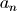

API reference¶
This page provides an auto-generated summary of API. For more details and examples, refer to the relevant chapters in the main part of the documentation.
Modules¶
Aerosols PSD¶
Note
-
aerosols_psd.lognormal.Npdf_D(D, lnmu, lnsigma)[source]¶ - Function for the pdf (probability density function)
- such as
Parameters: - D (float) – diameter value
- lnmu (float) – mean value as
- lnsigma (float) – standard deviation as
Returns: Probability at diameter D (note about dD)
Return type: pdf (float)
-
aerosols_psd.lognormal.Xcdf_D(D, lnmu, lnsigma)[source]¶ Function for the cdf (cumulative distribution function) such as
Parameters: - D (float) – diameter value
- lnmu (float) – mean value as
- lnsigma (float) – standard deviation as
Returns: Cumulative Probability Function from 0 to D.
Return type: cdf (float)
-
aerosols_psd.lognormal.Xpdf_logD(D, lnmu, lnsigma)[source]¶ - Function for the pdf (probability density function)
- such as
Parameters: - D (float) – diameter value
- lnmu (float) – mean value as
- lnsigma (float) – standard deviation as
Returns: Pprobability at diameter D (but note about dlnD, so we have actually a gaussian distribution).
Return type: pdf (float)
- Comment:
This function is actually very general as:
where
- (number median diameter)
 (area median diameter)
(area median diameter)- (volume median diameter)
-
aerosols_psd.lognormal.bin_fractions_lognormal(xmd, sigma, bins)[source]¶ Function to estimate the bins fractions for given and . Note that is usually ,
or
It assumed a unit consistency between xmd and the bins values.Parameters: - xmd (float) – x median diameter
- sigma (float) – (not ).
- bins (list) – List of bin limits (no central values).
Returns: list with bins fraction between bin limits.
Return type: lfractions (list)
-
class
aerosols_psd.lognormal.lnmode(ini_dict)[source]¶ Object with key information of an atmospheric particle lognormal mode It is based on a dictionary used to build de object, this dictionary has some fields as mandatory:
sigmaof lognormal mode (not !!)n_concnumber concentrationnamename of moderhopdensity particle
and one of these two:
mmdmass median diameternmdnumber median diameter
Parameters: ini_dict (dict) – Dictionary with the main information to be used in the lognormal mode. It is mandatory that this dataset has the information indicated above. # ======= EXAMPLE of how to use (piece of code, not in REPL) # # (1) Create/Define the object here a lnmode named lnD1 lnD1 = lnmode({'sigma': 1.8, 'mmd':1.e-6, 'n_conc':7e-6, 'rhop':2650.0, 'name':'D1'}) # (2) How the statistics information of this mode lnD1.show() # (3) Estimate the bin fractions for that distribution for mass distribution print(lnD1.bin_fractions([0.001e-6,1.0e-6,2.e-6,3.e-6])) # (4) Estimate the bin fractions for that distribution for number distribution print(lnD1.bin_fractions([0.001e-6,1.0e-6,2.e-6,3.e-6]), kind='nmd')
-
bin_fractions(bins, kind='mmd')[source]¶ Calculate the fraction of the distribution of each bin. We have an object with mmd, nmd etc. So we have to be explicit about for which distribution we want to calculate bin fractions (mmd, nmd etc).
NOTE: we have to be consistent between bins units and mmd/nmd units.
Parameters: - bins (list/array) – List with all bin limits (no bins center values)
- kind (str, optional) – mmd or nmd. Defaults to ‘mmd’.
Returns: Freq/fraction per bin
Return type: bin_frac (list)
-
aerosols_psd.lognormal.plot_multimodal(ax0, a_sigma, a_mmd, a_names, a_fact, nmodes, dmax=150.0, dmin=0.001, dinc=0.0005, rho=2650, nconc=7000000.0, ndist='v')[source]¶ This function add a plot of a multimodal distribution ot the axes ax0, the modes added are those defined by a_sigma and a_mmd but only using the first nmodes in the array.
Parameters: - ax0 (matplotlib axes) – A matplotlib axes where draw the distribution
- a_sigma (array) – Array with the values of sigma of a multimodal lognormal.
- a_mmd (array) – Array with the values of the mass median diameter of all modes.
- a_names (array) – Array or list with the names of the modes.
- a_fact (array) – Array with fractions for each mode.
- nmodes (array) – Index (in the arrays above) of modes to use.
- dmax (float, optional) – Max diameter on plot. Defaults to 150.0
- dmin (float, optional) – Min diameter on plot. Defaults to 0.001
- dinc (float, optional) – resolution in diameter. Defaults to 0.0005
- rho (float, optional) – Density of the particles. Defaults to 2650
- nconc (float, optional) – Number concentration. Defaults to 7e6
- ndist (string, optical) – Name of distribution. Defaults to v.
Returns: return the axes introduced and changed by the function.
Return type: ax0 (matplotlib axes)
-
aerosols_psd.lognormal.stats_lognormal_mode(sigma, mmd, name, rhop=2650.0, n_conc=7000000.0, show=True)[source]¶ Estimates, and optionally shows, the general info of an aerosol lognormal mode.
Parameters: - sigma (float) – Standard deviation of mode.
- mmd (float) – Mass median diameter.
- rhop (float, optional) – Density particles in mode. Defaults to 2650.0.
- n_conc (float, optional) – Number concentration. Defaults to 7e6
- show (bool, optional) – True to print in stdout. Defaults to True.
Returns: list with several statistics asociated to lognormal distr.
Return type: out (list)
# ======================================================================= # Typical output # # > stats_lognormal_mode(1.8, 1e-6, 'D1', rhop=2650.0, n_conc=7.e6) ========================================================================= *sigma = 1.8000e+00 | *mmd = 1.0000e-06 m |=> nmd = 3.5470e-07 m |=> smd = 7.0787e-07 m | smd! = 7.0787e-07 m reff_n = 8.4135e-07 | reff_v = 5.0000e-07 m | reff_m = 5.0000e-07 m mmeand = 1.1886e-06 | nmoded = 2.5108e-07 m | d_avgm = 5.9557e-07 m *n_conc = 7.0000e+06 | a_conc = 4.6456e-06 m | v_conc = 7.7427e-13 m m_conc = 2.0518e-09 *before word means pre-defined, ! after word means 2nd method all others without symbols mean calculated =========================================================================
Binning of modal based climate diagnostics¶
Note
-
aerosols_psd.binning.create_netcdf_2D_bins(dic_fractions, dic_varname, dic_ncnames, modes, new_bins, dic_files, newvarname, ftest=None, save=True, test_info=None)[source]¶ Creates a netcdf of a given (lat,lon) diagnostic with values over a set of bins, given the netcdfs over a set of modes for that diagnostics. The inputs are therefore a set of netcdfs, one per mode, for a variable X(time, lat, lon) the output is a single netcdf with X(time, lat, lon, bins).
For the calculation we need the expected fractions per bin for each mode. That can be calculated with other functions provided in aerosols_psd set of functions.
With test_info the function can perform test of consistency.
Parameters: - dic_fractions (dict) – Dictionary for fractions per mode for new_bins.
- dic_varname (dict) – Dictionary variable-names on each mode diagnostic netcdf.
- dic_ncnames (dict) – Dictionary filenames of netcdf files per mode.
- modes (list) – Mode names (used as keys for dictionaries above).
- new_bins (list) – list or array with the bin limits.
- dic_files (dict) – Dictionary with info for output netcdf and base netcdf.
- newvarname (str) – New varname with diagnostic per bins.
- ftest (file, optional) – Save test on opened file ftest. Defaults to None.
- save (bool, optional) – Save netcdf (if not useful for test). Defaults to True.
- test_info (dict) – kind of test, area is a datarray of area_grid if needed by test. Defaults to None. Example: {kind=’tendeny’, area=datarray, years=[‘2000’,‘2001’]}
Returns: None. It saves a netcdf.
# EXAMPLE ================================================================ # Case with: modes named by A and B -> TWO MODES # bins = [0.1, 5.0, 10.0] -> TWO BINS (three limits) # modes = ['A', 'B'] bins = [0.1, 5.0, 10.0] dic_fractions = {'A': [0.2, 0.5, 0.3], 'B': [0.1, 0.8, 0.1]} dic_varname = {'A': 'emidust', 'B': 'emidust' } dic_ncnames = {'A': 'emidust_modeA_mymodel.nc', 'B': 'emidust_modeB_mymodel.nc' } dic_files = {'basedir': '/home/myhome/mydirwithnc/', 'base_nc': 'my_canonical_netcdf.nc', # base_nc -> It could be any of the dic_ncnames. 'base_var': 'emidust', # base_bar -> It will be remove on save of binned file 'newf_nc': 'emidust_BINNED.nc'} newvarname = 'emidust_bins' create_netcdf_emi_bins(dic_fractions, dic_varname, dic_ncnames, modes, new_bins, dic_files, newvarname, ftest=None, save=True) # (1) Read 'basedir + base_nc' -> copy from here the coords and dimensions of netcdf # (2) Add the bins dimensions to the given structure # (3) Open the files of dic_ncnames, for each file open the variable of dic_varname. # (4) With these files and the dic_fractions estimate the binned 2D file. # (5) As save=True it saved the netcdf with name newf_nc and variable name newvarname. # # For emissions or depositions it is a handy possibility to test consistency. f_area = '/home/myhome/mydirwithnc/area_grid.nc' vararea = xr.open_dataset(f_area)['area'] mytest = open('testing_results.txt', 'w') test_emi = {kind='tendency', area=vararea} create_netcdf_emi_bins(dic_fractions, dic_varname, dic_ncnames, modes, new_bins, dic_files, newvarname, ftest=mytest, save=True, test_info=test_emi) mytest.close()
-
aerosols_psd.binning.test_tendency(test_info, tendency_bins, new_bins, modes, basedir, dic_ncnames, dic_varname, ftest=None)[source]¶ This function compares a binned diagnostic with the set of files per mode , where b is the set of bins.
It is assumed that test_info is of the form: test_info = { kind=’tendency’, area=datarray, years=list of years as str}
For the calculation assumed a leap calendar and years with 365 days. Given that the test is for consistency between modal and binned approaches last hypothesis is not important.
Parameters: - test_info (dict) – Dictionary for fractions per mode for new_bins.
- tendency_bins (datarray) – Dictionary variable-names on each mode diagnostic netcdf.
- new_bins (list) – List or array with the bin limits.
- modes (list) – Mode names (used as keys for dictionaries above).
- dic_varname (dict) – Dictionary variable-names on each mode diagnostic netcdf.
- dic_ncnames (dict) – Dictionary filenames of netcdf files per mode.
- ftest (file, optional) – Save test on opened file ftest. Defaults to None.
Returns: None. Print on screen or save to file.
-
aerosols_psd.binning.total_tendency(tendency_data, area)[source]¶ Estimate the total tendency for a year assuming a year with 365 days. Inputs are in SI, and outputs are Tg per year.
Parameters: - tendency_data (datarray) – Datarray with a tendency field with monthly resolution, and SI units.
- area (datarray) – Datarray with the area per grid cell.
Returns: Total tendency per year in Tg.
Return type: tendency (float)
Mie Scattering Spheres¶
Note
-
mie_scattering.pymie_core.mie_complex_coef(x, m, n, method='Bessel')[source]¶ Function to calculate Mie Complex Coeffients an and bn
Parameters: - x (float) – mie size parameter
- m (complex) – complex refraction index
- n (integer) – order of an, bn
Returns: mie complex coefficients of order n.
- an (float): mie complex coefficient 
- bn (float): mie complex coefficient
Return type: (tuple)
-
mie_scattering.pymie_core.mie_parameters(wavelenght, rad, m, langle, nmax=0, eps='1e-8')[source]¶ This function calculate all the physical parameters
Parameters: - wavelenght (float) – Wavelenght
- rad (float) – Radius of the sphere
- m (complex) – Complex Refraction Index
- langle (float) – list of angles to calculate the phase matrix
- nmax (float) – Max number of terms to be included on Mie calculations. If nmax=0 the number of terms are calculated to provided an estimated accuracy of eps.
- eps (float) – By default it is 1e-8.
Returns: mie scattering optical parameters. Note that Fmat and Smat elements are themselves lists.
- Qvec (list): [Qsca, Qext, Qabs, Qbk, Qpr]
- albe (float): single scattering albedo
- g_par (float): asymmetry g parameter
- Cvec (list): [Csca, Cext, Cabs]
- Fmat (list): [F11/Qsca, F12/Qsca, F33/Qsca, F34/Qsca]
- Smat (list): [S1, S2]
Return type: (tuple)
-
mie_scattering.pymie_core.vec_mie_angular(nmax, phi)[source]¶ Function to calculate Mie Angular functions [1,NMAX]
Parameters: - nmax (integers) – Order of the functions
- phi (float) – Scattering Angle [degrees]
Returns: mie-functions with indices 0 to nmax evaluated a
- l_mie_p (list): Mie-function [0, nmax] evaluated on .
- l_mie_t (list): Mie-function [0, nmax] evaluated on .
Return type: (tuple)